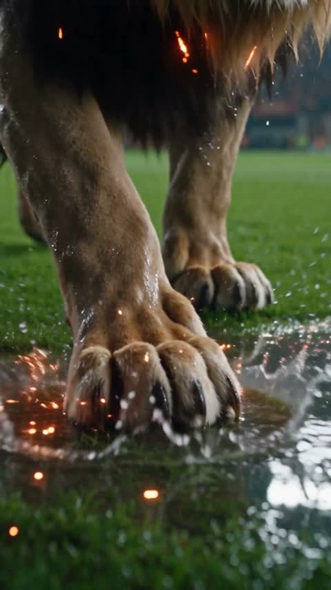
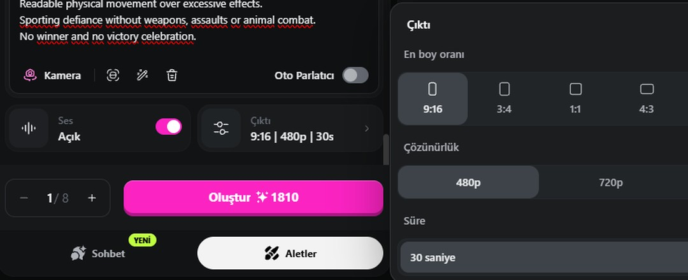
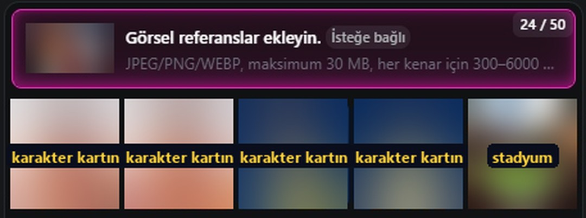
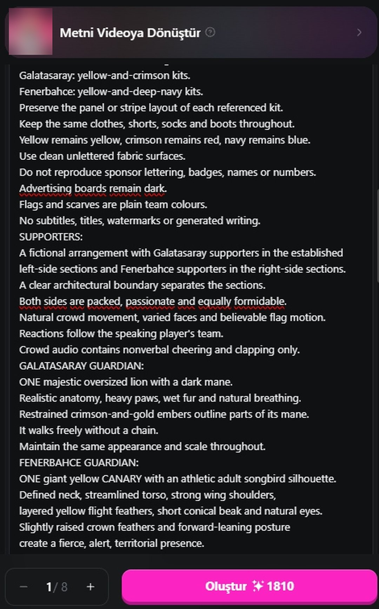
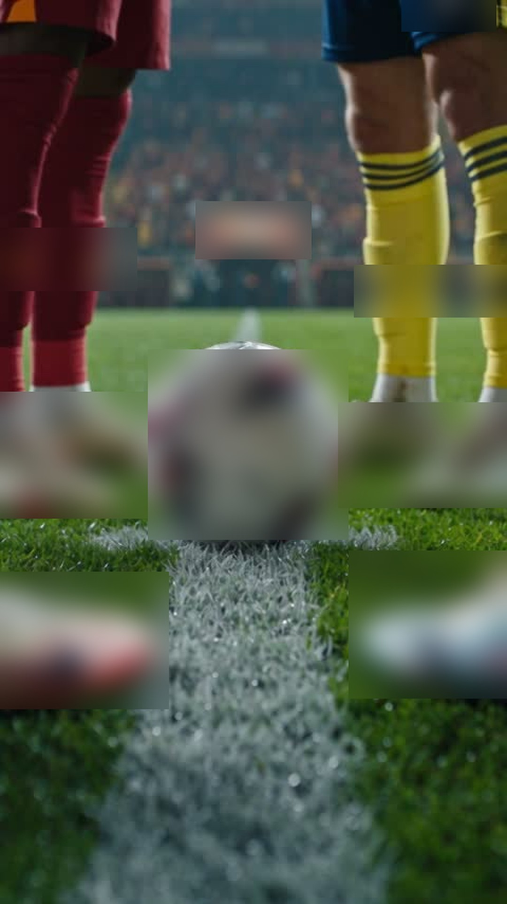
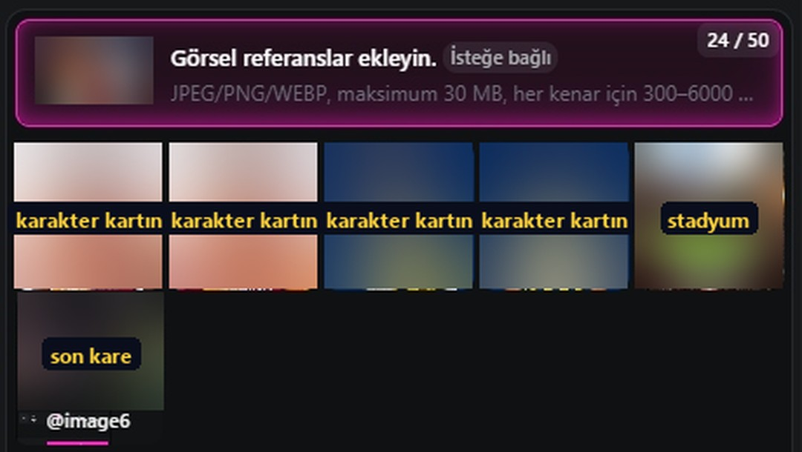
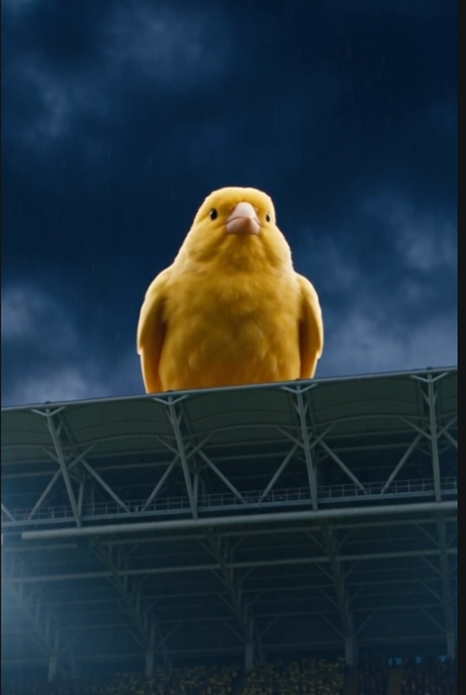
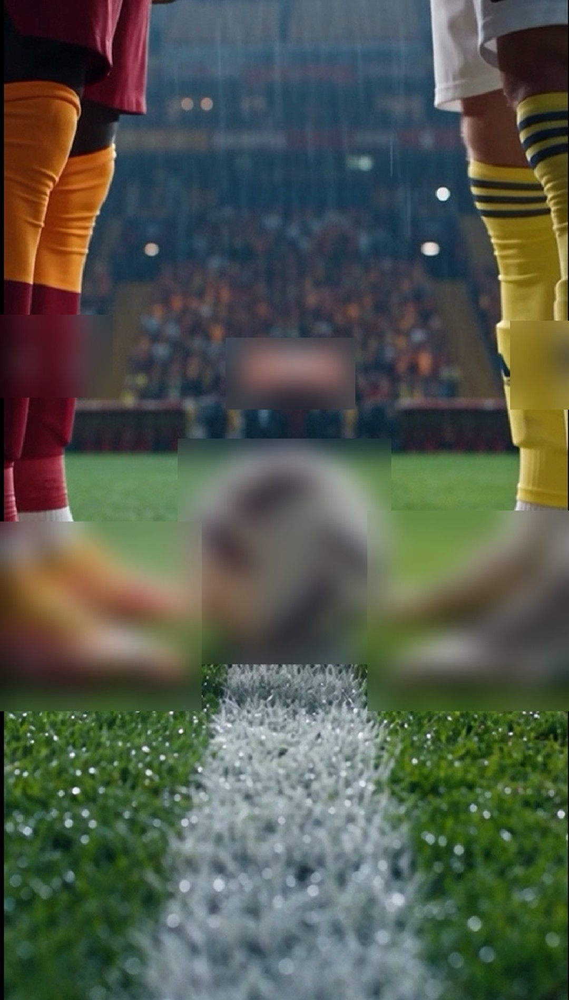

@yapayburlab · Rehber merkezi
İstanbul Düellosu: AI Derbi Filmi Nasıl Yapıldı?

0. Araçlar ve maliyet
- OpenArt · Seedance 2.5 (video, sesli). Ayar: 9:16, 30 sn, Ses: Açık.
- OpenArt · GPT Image 2.5 (karakter kartları).
- Maliyet (ekrandan): 480p / 30 sn = 1.810 kredi. İki parça yaklaşık 3.620 kredi. Önce 480p'de dene, beğendiğini yükselt.

1. Fikir: iki taraf, iki koruyucu, tek top
Fikrin özü şu: iki kaptan meydan okuyor, aslan ve kanarya koruyucu olarak sahada duruyor, film ortada duran topla bitiyor. Kazanan gösterilmez, böylece iki tarafın taraftarı da paylaşır.
2. Karakter kartları (GPT Image 2.5, her biri ayrı üretim)
İki takıma ikişer özgün oyuncu tasarla. Kalıp şu:
Character reference sheet, 4 views on neutral dark grey background (front, 3/4, profile, close-up face), same lighting. Original fictional footballer, [yaş], [yüz, saç, sakal], NOT resembling any real person or athlete. Wears a plain [yellow-and-crimson / yellow-and-deep-navy] football kit with no logos, no badges, no numbers, no sponsor text, plain unbranded boots. Photorealistic.Kartları video sekmesine @image1–@image4 olarak, stadyum görselini @image5 olarak yükle.

3. PART ONE prompt'u: "Meydan okuma" (30 sn)
Create PART ONE of a two-part cinematic Istanbul football derby fantasy.
OUTPUT:
30 seconds. Vertical 9:16. Photorealistic live-action sports fantasy.
Generate synchronized Turkish dialogue, cinematic music and stadium sound.
This is a fictional pre-match film.
REFERENCE CAST (all original fictional characters):
@image1 = GS-A, first crimson-team captain (character card).
@image2 = GS-B, second crimson-team player (character card).
@image3 = FB-A, first navy-team captain (character card).
@image4 = FB-B, second navy-team player (character card).
@image5 = stadium architecture and pitch layout.
Each card defines one separate original character. Keep each face identical in every shot.
No real person likeness. Exactly four featured players. Do not duplicate their faces in the crowd.
Never speak reference labels or production instructions.
SETTING:
One Istanbul stadium at night. Preserve the roof, seating tiers, entrances and pitch geometry of @image5.
Wet green grass, coherent white markings, fine rain and low mist.
Neutral lighting on faces; restrained team-coloured light behind them.
TEAM CONTINUITY:
GS-A and GS-B occupy SCREEN LEFT, facing right. FB-A and FB-B occupy SCREEN RIGHT, facing left.
Maintain this camera axis throughout.
Crimson team: yellow-and-crimson kits. Navy team: yellow-and-deep-navy kits.
Plain unbranded kits, boots and an unbranded white match ball. No sportswear logos.
No sponsor lettering, badges, names or numbers. Advertising boards remain dark.
Flags and scarves are plain team colours. No subtitles, titles, watermarks or generated writing.
SUPPORTERS:
Crimson-team supporters in the left sections, navy-team supporters in the right sections,
separated by a clear architectural boundary. Both sides packed, passionate and equally formidable.
Reactions follow the speaking player's team. Crowd audio: nonverbal cheering and clapping only.
LION GUARDIAN (left side):
ONE majestic oversized lion with a dark mane, realistic anatomy, heavy paws, wet fur, natural breathing,
restrained crimson-and-gold embers in the mane. Walks freely without a chain. Same appearance and scale throughout.
CANARY GUARDIAN (right side):
ONE giant yellow CANARY with an athletic adult songbird silhouette: defined neck, streamlined torso,
strong wing shoulders, layered yellow flight feathers, short conical beak, natural eyes,
slightly raised crown feathers, fierce alert posture. Never a round baby-bird mascot, eagle, hawk, dragon or phoenix.
CANARY MOTION:
When airborne: clear forward flight path, visible complete wing strokes (upstroke, articulated downstroke,
feather spread, recovery), tail steering, feet tucked. Never suspended in the air with closed wings and dangling feet.
When perched: breathing, small head turns, wind in its feathers.
VOICE CAST (four distinct original male voices):
GS-A: deep resonant baritone, powerful controlled confidence.
GS-B: smooth medium register, cool and sharply articulated.
FB-A: deep gravelly bass-baritone, measured commanding authority.
FB-B: brighter medium register, agile rhythm and fearless confidence.
DIALOGUE:
Natural, clearly articulated Turkish. Speak only the exact Turkish lines in the timeline.
No translation, paraphrasing, narrator or additional words. One speaker at a time.
Only the active speaker moves his lips. Stable medium close-ups with visible mouth and jaw.
Finish every line before cutting. Voices above music, crowd and weather.
After each sentence a short beat, then that speaker's supporters erupt.
TIMELINE:
0.0–1.2s: Extreme low close-up of the lion's paw landing on wet grass. Splash, a few embers, one deep bass impact.
1.2–2.5s: Low-angle view of the canary on a ledge above the right entrance; it opens both wings and launches with one powerful downstroke. Wingbeat sound. No dialogue.
2.5–8.0s: GS-A medium close-up, screen left, GS-B softly behind, the lion farther behind. He looks across the pitch.
Speak 3.0–6.9: "Burası İstanbul! Bu gece, tarihi biz yazacağız!" Left crowd roars after the line.
8.0–13.5s: FB-A equally powerful close-up, screen right, FB-B behind; the canary perched on the right entrance in the distance.
Speak 8.5–12.3: "Tarih, sözle yazılmaz! Karşınızda biz varız!" Right crowd answers.
13.5–19.0s: GS-B medium close-up, half-smile.
Speak 14.0–17.9: "Bu sahayı size dar edeceğiz. Hazır olun!"
19.0–24.5s: FB-B matching medium close-up, fearless eye contact.
Speak 19.5–23.3: "Önce bizi geçin! Sonra konuşuruz!" His supporters roar.
24.5–27.5s: Symmetrical wide shot; both pairs approach the centre mark, the lion beside the left pair, the canary flying behind and above the right pair with at least two complete wingbeat cycles, full wingspan in frame. Drums rise. No speech.
27.5–30.0s: Low close-up of ONE unbranded football on the white centre mark; four plain boots at the edges, two left, two right. The ball remains still, the camera settles, hold the final composition for one full second. Rain, low crowd rumble, unresolved musical tension. No fade, no title.
PRIORITIES: exact intelligible Turkish dialogue; stable faces and distinct voices; consistent kits, guardians and stadium; readable movement over excessive effects; sporting defiance without weapons, assaults or animal combat; no winner, no victory celebration.
4. Devamlılık hilesi: son kare = yeni başlangıç
PART ONE bitince son kareyi ekran görüntüsü olarak al (oynatıcı düğmeleri görünmesin), video sekmesine @image6 olarak yükle. PART TWO bu kareden başlar ve iki video tek film gibi akar.


5. PART TWO prompt'u: "Cevap sahada" (30 sn)
Create PART TWO, the concluding 30-second chapter of the same cinematic Istanbul football derby fantasy.
30 seconds, vertical 9:16. Photorealistic live-action sports fantasy.
Generate synchronized Turkish dialogue, cinematic music, stadium ambience and realistic sound effects.
REFERENCES: @image1 = GS-A, @image2 = GS-B, @image3 = FB-A, @image4 = FB-B (original character cards, same faces as PART ONE, no real person likeness), @image5 = stadium architecture, @image6 = the ACTUAL final frame of PART ONE and the opening composition.
OPENING CONTINUITY (highest visual priority):
Begin with the composition of @image6: same low camera, perspective, unbranded ball, boot arrangement, socks, grass and white marking. Do not invent extra legs. This is a continuation, not a new establishing shot.
WORLD, TEAM CONTINUITY, TEXT RULES, SUPPORTERS, GUARDIANS, VOICE CAST and DIALOGUE RULES: identical to PART ONE.
TIMELINE:
0.0–2.5s: Continue @image6. Fine rain, subtle weight shifts, the ball motionless, very slow push toward the ball. One deep heartbeat-like drum.
2.5–8.0s: GS-A medium close-up, screen left, looking at FB-A.
Speak 3.0–6.9: "İstanbul bizim! Son düdüğe kadar buradayız!" Left supporters erupt.
8.0–13.5s: FB-A matching close-up; the canary perched in the distance.
Speak 8.5–12.5: "İstanbul'u istiyorsanız, önce bizi geçeceksiniz!" Right crowd answers.
13.5–17.5s: GS-B medium close-up.
Speak 13.9–16.7: "Doksan dakika… Bir an bile rahat yok!" Brief pause after "dakika".
17.5–21.5s: FB-B medium close-up, a confident nod.
Speak 17.9–20.7: "Size de yok! Şimdi, sahada görüşürüz!" Music rises after the sentence.
21.5–26.5s: Low wide view of the centre circle; GS-A takes ONE controlled touch, FB-A closes into a defensive stance, the others move into support. Clean boot-to-ball contact, no tackles, no tangled limbs. Cut before the contest. The lion watches from the left touchline.
26.5–30.0s: High wide view; the canary launches and flies a broad arc above the right stands with a complete wingbeat; the lion raises its head; crimson-gold light rises through the left flags, yellow-navy light through the right flags, and the two light waves meet above the centre circle in one luminous pulse. Both sections erupt. Drums, one lion roar, a strong wingbeat, one final musical impact. Leave the centre uncluttered for a title. No score, no winner.
FINAL PRIORITIES: clear exact Turkish dialogue and correct speaking faces; continuity with @image6; stable identities, kits and screen direction; natural guardian movement; restrained effects. No weapons, assaults, injuries or animal combat. Conclude at the peak of anticipation.
6. Neden çalışıyor? 7 profesyonel kural
- Tek eksen kuralı: Bir takım hep solda, öbürü hep sağda. Kesmeler kafa karıştırmaz.
- Repliğin zamanı yazılı: "Speak 3.0–6.9" gibi saniye aralığı, dudak senkronunu tutturur.
- Bir konuşan, diğerleri ağzı kapalı: Yanlış ağız oynaması biter.
- Ses tarifi: Dört ayrı ses tipi, iki parçada aynı kalır.
- Yazı yasağı: Model harf üretirse bozar. Yazıları kurguda biz ekleriz.
- Koruyucuya hareket tarifi: "Havada donma" hatasının ilacı, kanat vuruşunu adım adım yazmak.
- Kazanan yok: Film maçın heyecanında biter, iki taraf da paylaşır.
7. Kurgu

- İki parçayı arka arkaya koy; birleşme noktasındaki top karesini 0,5 sn kısalt.
- Altyazılar: replikler, kalın ve beyaz, alt üçte birde.
- Sonuna 9 sn kapanış: "Yorumlara REHBER yaz · Devamı için takip et · @yapayburlab".
- Açıklamanın ilk satırı: "Bağımsız taraftar çalışmasıdır; kulüplerle bağlantılı değildir, sponsorlu ya da onaylı değildir. AI ile üretildi." Platformun AI etiketini de aç.
8. Aynı tekniği başka konulara uygula (3 örnek)
Örnek A, mahalle düellosu (sınırsız seri): Kadıköy martısı ve Beşiktaş kedisi koruyucu olarak duruyor. İki esnaf kaptan simit mi poğaça mı diye meydan okuyor. Final: tezgâhın ortasında tek bir çay bardağı. Eksen kuralı, replik saniyeleri ve son kare devamı aynen geçerli.
Örnek B, marka için reklam düellosu (işletmeler için): Bir kahve markasının iki ürünü (espresso ve soğuk kahve) iki karakter oluyor, koruyucular ateş ve buz. Replikler ürün özelliklerinden, final fincanların ortasında. Gerçek marka için mutlaka izinle ve "Örnek çalışma" etiketiyle.
Örnek C, tarih düellosu (eğitici): 1453'te iki usta mimar bir kubbe yarışında. Koruyucular kartal ve geyik. Final kare yarım kalmış kubbenin tepesindeki son taş. Şiddet yok, rekabet ustalıkta.
Her örnekte değişen sadece 4 şey var: kadro kartları, koruyucular, replikler ve final nesnesi. Prompt iskeletinin geri kalanı aynı kalıyor.
9. Şimdi sen
Kendi derbin için iki koruyucu hayvan seç, dört özgün kaptan kartı üret, replikleri kendi şehrine göre yaz. Sonucu bizi etiketleyerek paylaş, en iyilerini kanalımızda gösterelim.
Bu tür videoların devamı için takip et: @yapayburlab (Instagram · TikTok · YouTube)